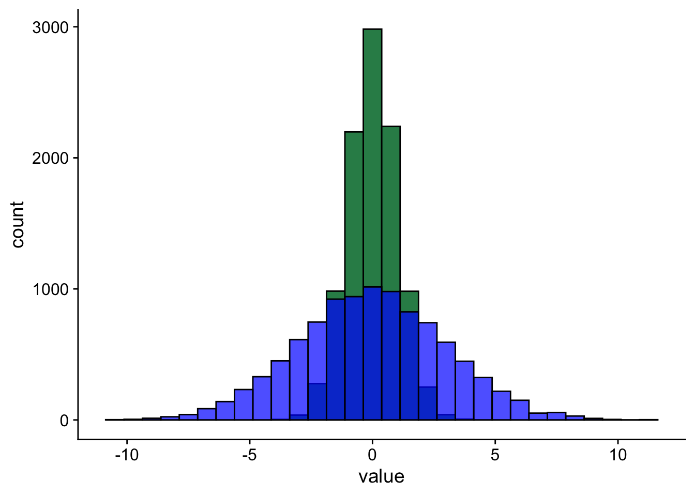

In Lecture 4 we started talking about how quantitative methods deal with measurement—that is, putting numbers to things. In today’s lecture we’re going to start talking about what we actually do with these numbers. The first thing we’ll want to do is to describe these numbers, and today we’ll cover two main ways for describing your set of numbers.
Describing numbers with numbers
Let’s say we’re interested in how well people perform at
We’ve taken a bunch of measurements, and our measurements are as follows: 163, 167, 190, 171, 172, 192, 176, 154, 161, 164. The first thing we’ll want to do before we can do anything useful with these numbers is to come up with a way for succinctly describing them, or summarising them.
The first kind of summary that we might want is to describe the typical value. There’s a few different things that we could mean by the typical value, so we go through each of them in turn.
Measures of central tendency
What we mean by the typical value is not always clear. For example, in Figure 1 we can see the average annual salary (in US dollars) for a set of 78 countries. Each bar of the plot represents the number of countries in the given salary bracket ($0–$10k, $10-$20k, …).
From the plot we can see that there are a lot of countries where the average annual salary is less than $30,000 USD. There are also a handful of countries where the average annual salary is more than $100,000 USD. What would you consider the most typical annual salary? The bracket with the most countries in it? If so, that would mean the most typical salary on the planet is between $0 and $10,000 USD per year. Or maybe we should pick the value where half the countries have a lower average salary and half the countries have a higher one? Choosing this option leads to an estimate of the most typical salary for $12,855 USD per year.
As you can see, depending on how we define the most typical value, we get different answers. We’ll cover the three main ways of defining the typical value or average.
Mode
The mode is a term that refers to the most frequent value in a set of measurements. This is the kind of average we discussed above when we said the most typical salary on the planet is between $0 and $10,000 USD a year. The easiest way to spot the mode is just to draw a plot like the one we did in Figure 1 and then just look for the tallest bar.
A set of numbers can have one or more modes. If it only has one mode, then it is said to be unimodal. Bimodal means it has two modes. If it has three or more modes, then it is usually called multimodal.
Important
The mode is the only definition of typical value that works for data that is measured at the nominal/categorical level.
When it comes to truly continuous variables, such as height, a set of measurements is likely to be multimodal. Why? Because no two people are exactly the same height, so each person’s height is the mode of the distribution because there’s only measurement that has exactly that value. For this reason, the mode is rarely used for continuous variables measured at the interval or ratio levels.
Average salary is continuous variable, but we turned it into a discrete variable placing countries into discrete categories.
Median
The median is the second kind of average we talked about above; the middle value where half the measurements are above that value and half the measurements are below. To find the median, we first need to sort our data.
Important
To be able to calculate a meaningful median, the variable must be measured on at least the ordinal level.
Mean
Mean vs Median
import { box2 } from "./samples.qmd";box2(inputArray)Measures of spread
If you look at Figure 3 you’ll see two data sets that are centred at the same value but have very different amounts of variability. Both sets of data have a mean of 0. But, as you can see, the values of one are spread out much more widely than the values of the other.

This is why, in addition to measures of central tendency, we also need measures that tell us about the spread, or dispersion of a variable. Once again, there are several measures of spread available, and we’ll talk about five of them:
- Range
- Interquartile range
- Deviation
- Variance
- Standard deviation
Range
The range of a variable is simply the distance between its smallest and largest values. For example, if we gather a sample of 100 participants and the youngest one is 17 years old, and the oldest one is 67 years old, then the range of our age variable in this sample if 67 - 15 = 50 years.
Checking the range of a variable can tell us something about whether our data makes sense. Let’s say that we’ve run a study examining reading ability in primary school age children. In this study, we’ve also measured the ages of the children. If the range of our age variable is, for example, 50 years, then that tells us that we’ve measured at least one person that is not school age.
Beyond that, the range doesn’t tell us much of the information we’d usually like to know. This is because the range is extremely sensitive to outliers. What this means is that it only takes one extreme value to inflate the range. In our school example, it might be that all but one of the people measured is actually in the correct age range. But the range alone cannot tell us if this is the case.
Interquartile range
A slightly more useful measure than the range is the interquartile range or IQR. The IQR is the distance between the 1st and 3rd quartiles of the data. Quartiles, like the name suggests, are created by splitting the data into four chunks where each chunk has the same number of observations. Or put another way, the median splits the data into two where half the observations are higher than the median and half the observations are lower than the median. Quartiles are created by taking each of these halves and splitting them in half again. The range covered by the middle two 25% chunks is the IQR. It is the range that covers the middle 50% of the data.
The benefit of the IQR over a simple range is that the IQR is not sensitive to occasional extreme values. This is because the bottom 25% and the top 25% are discarded. However, by discarding these data, the IQR provides no information about how spread these outer areas are.
values <- salary$yearly
qs <- quantile(values, c(0, 0.25, 0.5, 0.75, 1))Deviation
Both the range and the IQR work by looking at the distance between only two observations in the entire data. For the range, it’s the distance between the minimum point and the maximum. For the IQR, it’s the distance between the midpoint of the upper half and the midpoint of the lower half.
As a result, both these measures tend to be fairly course-grained. To get a more fine-grained measure of the spread we could look at each data point and calculate how far it is away from the typical value. Usually, this is done by looking at how far away each data point is from the mean of the dataset. This is known as the deviation.
This is shown in Equation 1, below:
\[ \definecolor{point}{RGB}{114,0,172} \definecolor{every}{RGB}{46,139,87} \definecolor{average}{RGB}{0,0,206} \color{point} x_{\color{every} i} \color{black} - \color{average} \bar{x} \tag{1}\]
Take the value of a particular point and subtract it from the average.
Because we are calculating this for every data point there will be as many deviations as we have values for our variable. To get a single measure, we’ll have to perform another step.
One thing we could try doing is just to add up the numbers. But this won’t work. To see why, try adding a few points below. Add you add the points take a look at the table below. The table has a column with all the points, and all the deviations from the mean. Below the table you can see what happens when you add up all those deviation values. What do you notice?
As you can see, they add up to zero. Because the mean is our midpoint, the distances for all the points higher than the mean cancel out the distances for all the points lower than the mean.
We can get around this problem by taking the square of the deviations before adding them up. Squaring a number will turn a negative number into a positive number, so when we add up all the numbers they’ll no longer add up to 0.
$$
SS=(x - x)^2 $$
\[ \color{black} \mathrm{SS} \color{=}= \color{sum} \sum^{\color{every} N}_{\color{every} i=1}{\color{dev} (x_{\color{every} i} \color{dev} - \bar{x})\color{sq}^2} \]
\[x^2\]
Take the square of the deviation from the mean for every value and add them up.
Adding up all the numbers, however, leaves us with another problem.
The sum of the squared deviations gets bigger with bigger samples. That’s not good because even big samples can have small amount of variation, while smaller samples can vary a lot. We want our measure of spread to be able to capture this. Get around this, we’ll move on to our next measure of spread.
Variance
You next measure of spread is the variance. The variance gets around the problem of the measure of spread just getting bigger when we have bigger datasets. And it gets around this problem by just working out the average squared deviation.
Standard deviation
Variance is a good measure of dispersion and it is widely used. In fact, most of the statistical tests we will be using are based around variance. However, there is one minor inconvenience about this measure when it comes to interpretability: it’s measured in squared units! For example, if salary is measured in US dollars, s2salary is expressed in USD2, whatever those may be.
Fortunately, the solution to this problem is easy: we can simply take the square root of variance. This is called the standard deviation.
Just like with variance, there is population standard deviation, \(\sigma\) and the sample standard deviation, \(s\) or \(SD\).
Note
You can think of SD as a measure of the differences of a set of scores from their mean. If variance is the mean squared deviation in the variable, standard deviation is the mean deviation.
Samples and populations
One of the key things that we want to do with statistics is to make inferences about populations from the information we get from samples. That is, we often want to make a judgement, or draw a conclusion, about an aspect of the population when all we have access to is a sample.
We’ll get to more formal definitions of populations and samples shortly, but first, let’s make things more concrete by introducing an example.
Let’s say you’re interested in the average height of people in the UK. The “easy” way to find an answer to this question is to measure all the people in the UK and then work out the average height. Doing this will give you the exact answer to your question. But if you can’t measure everyone in the UK, then what do you do?
One option is to select a smaller group, or subset, of people from the UK. You can then measure the height of people in this group, and then try to use this information to figure out plausible values for the average height of people in the UK.
In this example, the group (or groups) you’re making claims about is the population. You want to claims about the average height of people in the UK. And the sample is a subset of this population—the smaller group of people that you were eventually able to measure.
It’s important to note that there isn’t a single population. What counts as the population will depend on the claim you’re making. For example, let’s say I’m interested in testing the claim, “Do people in East Sussex show an interference effect on the Stroop task?”. Here the population would be people in East Sussex. If, however, I want to make claims about people in general, then the population might be all living humans.
Theoretical populations
So far in our talk of populations we’ve only really be thinking about populations as the set of actually existing things that we can take our sample from—for example, all living humans. But populations don’t have to be sets of actually existing things. Instead, they can be the set of possible things from which our samples can be drawn. This might seem a little confusing, so an example might help.
Let’s say we want to collect a sample of 6 coin flips. To collect our sample, we take a coin and flip it 6 times and count up the number of heads and tails and from this we could work out, for example, how many heads are typically seen when flipping the coin 6 times.
So that’s our sample, but what is our population? One way to think of our population is as the set of possible outcomes (numbers of heads) that would occur if we flipped the coin 6 times. It turns out that can actually work this out.
To work it out we would do something like the following:
We can work it out because we know something about the process that gives rise to our data. Although we might not be able to clearly specify the process that gives to the data in a Stroop task, there will still be some data generating process, which we can think of as the population we’re sampling from.
Note
In later years you’ll learn about something called the null hypothesis. The null hypothesis, in simple terms, says that the data generating process for two sets of observations is same. For example, it might say that the data generating process that gives rises to people’s responses on the Stroop task is the same for the congruent condition and the incongruent condition. You’ll learn how to perform statistical tests that tell you whether the set of data that you’ve actually collecting is surprising or unsurprising if you were to assume that two data generating processes are actually the same.
The relationship between samples and populations
Let’s assume that we have explicitly defined our population (for example, as all people in the UK) and we’ve collected a sample by taking measurements from a subset of this population. What is the relationship between this sample and the population from which it was drawn?
The sample should resemble the population in some way. Most often we’re interested is knowing something like: “What is the typical value (i.e., the mean) of the population?“ In the example I introduced earlier, we were interested in average height. But we might also be interested in things a difference between two averages—for example, whether there is a difference in average depression levels before and after some intervention, or whether average response times are different between the two conditions of a Stroop task. Ideally then, the average height of our sample should resemble the average height of our population, or the average response time difference in our experimental sample should resemble the average response time difference in our population. But if we don’t know the average of our population, then how will we know whether our sample resembles it?
In short, we can’t know for sure. But we can think of a couple of things that will influence the relationship between our sample and the population. To figure out what these are, let’s do a thought experiment and think of some extreme cases.
First, consider the case where all the members of a population are identical. If this were the case, then our sample will have an identical average to the population. The height of one person would be the same as the average height of two people, which would be the same as the average height of 100 people, which would be same as the average height of the population because people only come in one height. But if the members of the population are all different from one another, then there is no guarantee that the sample’s average will resemble the population’s average.
The second extreme scenario is if our sample is very large. Let’s say that it is so large that it includes all the members of the population. If this were the case, then, by definition, our sample average would be identical to the population average. However, if our sample is smaller than the entire population, then once again, there is no guarantee that the sample’s average will resemble the population’s average.
Based on this reasoning, we can say that two things will influence whether your sample resembles your population. These are 1) the amount of variation in our population, and 2) the size of our sample.
Importantly, however, and barring the extreme cases above, for any particular sample we won’t know whether it resembles the population or not, because, remember, we don’t know the average of the population. Instead, we should think about these two factors as influencing how likely it is for samples to resemble the population. But what does this mean?
One way to think about this is in terms of repeatedly taking samples from the same population. For example, if we take a large sample from the population—large, but not so large as to include the entire population—then we can’t say that our particular sample will resemble the population. But if we take many samples (of that size), then we can say that on average those samples will be closer to the population than would be the case for a collection of smaller samples.
The same reasoning applies to variation in the population. If there is less variation in the population, then the samples drawn from that population will tend to be closer to each other and closer to the population average. But again, we won’t be able to say whether a particular sample has an average that is close to the population average.
Of course, sample size and population variation exert their influence together. If we want our sample averages to be close to the population average, then we need samples that are big enough, but what counts as big enough will depend on the population variation. Therefore, knowing whether our sample is big enough depends on knowing the population variation. Unfortunately, we don’t know this; however, there is a way to estimate it. But that’s a topic for another lecture.
The 20-sided dice represents a population that has a lot of variability. The individuals in the population (the dice throws) can be any number between 1 and 20. The 6-sided dice represents a population that has only a little variability. The individuals in the population (the dice throws) can only be a number between 1 and 6.
By looking at the running averages (the bottom plot for each dice) we can tell whether the samples on average resemble the population. If most of the averages fall very close to the population average then we can say the samples on average resemble the population.
Notice how for a given sample size (say 5 for each dice) the average of the samples from the low variability dice (6 sided) do a better job of on average resembling the population average. For the high variability dice (20 sided), the averages of the same size samples do a poorer job of on average resembling the population average. The important part here in on average. Individual sample averages may do a good job of resembling the population average no matter what the sample size is. This demonstration tells use the population variability is one factor that influences whether the averages of our samples will on average resemble the average of our population.
Let’s say that our sample averages do a good job of resembling the population average if the almost all the sample averages fall within ± 1 of the population average (the lines marked on the plot). Try adjusting the sample sizes for the two dice? What smallest value that will cause almost all the sample averages to land between the marked lines? Notice how for high variability dice this value must be far higher? This demonstration tells use the sample size is the second factor that influences whether the averages of our samples will on average resemble the average of our population.
Hint If you can’t work it out try setting the sample size to 16 for the 6-sided dice and to 180 for the 20-side dice.
Before we talk more about the sampling distribution let us first talk about distributions in general, and the processes that give rise to them. We’ll start off with the simplest distribution, the binomial distribution before moving on to the normal distribution.
The binomial distribution
To understand what the binomial distribution is, and where it comes from we’ll do a little thought experiment. In our thought experiment, we’ll take a coin, and we’ll flip it. When we flip a coin, one of two outcomes is possible. Either the coin will land showing heads, or it will land showing tails. We can say that there are two possible events or two possible sequences of events (sequences will make more sense when we add more coins) than can happen when we flip a coin.
Now let’s think of each of the sequences and count up how many heads are showing in each. In the first sequence, where the coin lands showing tails, no heads occur. In the second sequence, where the coin lands showing heads, there is one head. Therefore, we have one sequence that produces 0 heads, and one sequence that produces one head. And those are all the possible sequences.
But now let’s make it more complicated. Let’s flip two coins. Now there’s a greater number of possible sequences. We can list them:
- The first coin shows heads, and so does the second (HH),
- The first coin shows heads and the second shows tails (HT)
- The first coin shows tails and the second shows heads (TH)
- and the first coins shows tails and the second shows tails (TT)
Therefore, there are four possible sequences. Let’s count up the number of sequences that lead to 0 heads, one head, two heads, etc. If we do this, we’ll see that one sequence leads to 0 heads (TT). Two sequences lead to 1 head (HT, and TH). And one sequence leads to 2 heads (HH).
Let’s now add more coins. Things will get trickier from here because the number of sequences rapidly goes up. With three coins, there would be eight possible sequences, and with four coins, there would be 16 possible sequences. Figuring out the number sequences, and the nature of the sequences (whether they produce 0 heads, one head, two heads, etc.) quickly becomes difficult. To make things easier, we’ll draw a plot. First, we’ll draw a plot to trace out the sequences. We’ll use different coloured dots to indicate heads and tails. We can do this in the form of the branching tree diagram shown in Box @ref(fig:box2). Once we’ve
visualised the sequences, it’s easy to count up how many sequences result in 0 heads, one head, two heads etc. We can put our counts on another plot. For this, we’ll make a frequency plot or histogram. On the x-axis, we’ll have the number of heads. And on the y-axis, we’ll have the count of how many sequences result in that number of heads. This frequency plot is also shown in
You can adjust the slider in Box @ref(fig:box2) to change the number of coins you want to flip. Increasing the number of coins increases the number of possible sequences, and it changes the number of ways of getting one head, two heads, three heads and so on changes (however, there’s always only one way to get 0 heads and one way to get all heads). Notice that as you adjust the slider and add more and more coins, the frequency plot takes on a characteristic shape. You can mathematically model the shape of this plot using a binomial distribution.
In our coin flipping example, we created this shape by counting up the number of sequences that produced various quantities of heads. But if we look around at natural processes, we’ll see that this shape occurs often.
One natural process that gives rise to this shape is the “bean machine”[^1]. In a bean machine, small steel balls fall from the top of the device to the bottom of the device. On their way down, they bump into pegs. When one of the balls hits a peg, it has a roughly equal chance of bouncing off to the left or the right, not unlike a coin which has a roughly equal chance of landing heads up or tails up. At the bottom of the device are equally-spaced bins for collecting the balls. If enough balls are dropped into the device, then the distribution of balls across the bins will start to take on the shape of the binomial distribution. Very few balls will be at the very edges, because this would require the balls to bounce left or right every time.
Similarly, very few sequences of coin flips result in large numbers of heads or large numbers of tails. The greatest number of balls are seen in the bins near the middle. The balls that land here have bounced left and right a roughly equal number of times. Again a similar pattern can be seen with the coin flips.
In Box @ref(fig:box3), I’ve included a computer simulation of a bean machine. Press the Start button to display the bean machine and watch the balls drop. Press Replay to drop more balls.
The normal distribution
The shape seen in the binomial distribution is also seen in another distribution called the normal distribution. There are two key differences between the normal distribution and the binomial distribution.
The binomial distribution is bounded. That means that one end represents 0 heads and the other end represents all heads. That is, the distribution can only range from 0 to n (where n is the number of coins that have been flipped)—it is bounded at 0 and n. The normal distribution, however, ranges from negative infinity to positive infinity. Additionally, for the binomial distribution, the steps along the x-axis are discrete. That is, you can have 0 heads, one head, two heads and so on, but you can have anything in between—for example, it’s not possible to have sequences of coin flips that results in 1.5 heads. In contrast, the normal distribution is continuous.
The normal distribution is a mathematical abstraction, but we can use it as a model of real-life frequency distributions. That is, we can use it as a model of populations that are produced by certain kinds of natural processes. Because normal distributions are unbounded and continuous, nothing, in reality, is normally distributed. For example, it’s impossible to have infinity or negative infinity of anything. This is what is meant by an abstraction. But natural processes can give rise to frequency distributions that look a lot like normal distributions, which means that normal distributions can be used as a model of these processes.
Describing the normal distribution
Before we see how natural processes can give rise to the normal distribution, let us take a look at one. Box @ref(fig:box4) shows an example of a normal distribution. Two parameters can be used to describe the normal distribution. The location parameter denoted μ describes where the distribution is centred. The scale parameter denoted σ describes the width of the distribution. When you learn how to represent populations with distributions, then these two parameters will correspond to the population average and population variation, respectively.
Processes giving rise to the normal distribution
To see how natural processes can give rise to the normal distribution let us take a look at a simple simulation. The simulation in
In this game, each player rolls the dice a certain number of times, and they move the number of spaces indicated by the dice. Not that dissimilar to what you’d do in a game of monopoly, or a similar board game! For example, if a player rolled the die three times and they got 1, 4, 3, then they wouldn’t move 8 (1 + 4 + 3 = -4) spaces along the board. At the end of one round of rolls we can take a look at how far from the start each player is. And we can draw a histogram of this data.
It’s not only dice rolling a 6-sided dice that will give rise to a normal distribution. It could be any dice.
Or, instead of dice, we could pull scrabble tiles out of a bag. We’d just pull out one tile, then put it back, and then pull out another tile. And each player will just do this certain number of times. We can then just add up the tile values for the tiles that each player has drawn out and we can plot a histogram of the scores.
Now these games might seem a little artificial, but they actually represent something of a general principle that is widely applicable. What do all these games have in common? In all the games the final score of each player is determined by adding up a bunch of numbers. In fact, any process that involves adding up a bunch of numbers will produce something that looks like a normal distribution.
Let’s take something that seems very different to these games—for example, a development process like a people’s heights. A person’s current height is determined by adding up all the bits of growth they’ve done from the moment that they were born. Because there’s this adding up process, we might expect heights of people to be normally distributed. As a result, normal distributions are pretty ubiquitous.
Processes that don’t produce normal distributions
We won’t cover other distribution shapes in much detail, but let us take a look at an example of a process that doesn’t produce a normal distribution. To do this, we’ll just modify the dice game in Box @ref(fig:box5).
In Box @ref(fig:box5), click the option that says Multiply. Doing so changes the rules of the dice game so that a player’s score is determined by multiplying together the values of their dice rolls. For example, under the new rules, if a player rolled 1, 4, 3 then their score would be 12 (1 × 4 × 3 = 12). Now try clicking Roll! to see the shape of the distribution. This new distribution has an extreme skew. The vast majority of players have fairly low scores, but a tiny minority of players have extremely high scores. When you have a process that grows by multiplying, then you’ll get a distribution that looks like this.
In psychology, we won’t study many processes that grow like this, but some processes that grow like this will be very familiar to you. Think about something like wealth. Wealth tends to grow by multiplying. For example, earning interest or a return on investment of 10% means that the new value of the investment is 1.10 times the original value. This feature of wealth growth explains why, for example, in the UK, the top 10% of people control more wealth than the bottom 50%.
Describing deviations from the normal distribution
When you clicked the Multiply button, the dice game produced a distribution that was skew. Skew is a technical term that describes one way in which a distribution can deviate from a normal distribution. The normal distribution is symmetrical, but a skew distribution is not. A left-skewed distribution has a longer left tail, and a right-skewed distribution has a longer right tail. Use Box @ref(fig:box6) to explore skewness.
knitr::include_url(url = "https://paas-embed.netlify.app/skew/index.html", height = "250px")Apart from skew, deviations from the normal distribution can occur when a distribution either has fatter or skinnier tails than the normal distribution. The tailedness of a distribution is given by its kurtosis. The kurtosis of a distribution is often specified with reference to the normal distribution. In this case, what is being reported is excess kurtosis. A distribution with positive excess kurtosis has a higher kurtosis value than the normal distribution, and a distribution with negative excess kurtosis has a lower kurtosis value than the normal distribution. In your research methods courses, you probably won’t come across many distributions that have negative excess kurtosis. However, the distribution that describes dice rolls is one such distribution, and this will be discussed briefly later in this course. You will encounter distributions with positive excess kurtosis more often. In particular, the t-distributions, a distribution with positive excess kurtosis, will be used in several of the statistical procedures that you will learn. In Box @ref(fig:box7), you can explore excess kurtosis. When excess kurtosis is set to 0, then the figure displays a normal distribution. Distributions will no excess kurtosis are called mesokurtotic. When excess kurtosis is negative, the figure displays a thin tailed or platykurtotic distribution. And when excess kurtosis is positive, the figure displays a fat-tailed or leptokurtotic distribution.
knitr::include_url(url = "https://paas-embed.netlify.app/kurtosis/index.html", height = "250px")Distributions and samples
Now that we’ve covered samples, distributions, and populations, we’re going to start putting them all together. We saw that whenever we look at the distribution of values where the values are produced by adding up numbers we get something that looks like a normal distribution. And we saw that when we worked out the mean of a sample of data we did this by adding up all the values and then dividing that number by the number of values.
Let’s say that we want to measure some phenomenon—for example, scores on some standardised reading tests. We collect a sample of data from 50 children, and then we work out the mean of this sample, by adding up the 50 scores and then dividing this value by 50. Now let’s say that instead of only collecting one sample, we collect 100,000 samples. We work out the mean for each sample. And we then draw a histogram of the means for our 100,000 samples. What will this distribution look like? In our games, any time we added up numbers, as long as we added enough enough numbers, and we had a large enough set of players, then we’d get a normal distribution.
The same goes for our sample. As long as we add up enough numbers (our sample size) and we have enough samples (think, number of players) then the distribution of the means (the distribution of the players scores) will be normally distribution. This simple observation is fairly central in statistics. So much so that it’s called the central limit theorem.
A distribution of our samples
The distribution of some statistic—for example, the mean—that we see when repeatedly sample from the population is called the sampling distribution. That’s a bit of a mouthful so we’ll try to unpack it a bit.
Let’s us go back to example where we were working out the mean of a series of dice rolls. In that example, we saw how the mean of our samples moved around from sample to sample, so sometimes it was closer to the true mean, and sometimes it was further away. We can see this in the box below.
Now instead of looking at our sample means wiggle about from sample to sample, we’re just going to collect a lot of samples and then plot the distribution. We can see that here:
As we can see, the shape of the sampling distribution of the mean is unsurprisingly a normal distribution. Other statistics have sampling distributions too. For example, we could calculate the variance for each sample and the we could plot the sampling distribution of the variance. The sampling distribution of variance won’t be normally distributed. Why? Remember that whenever we add stuff up we get a normal distribution, and working out a mean is just a special way of adding up numbers. When we work out a variance we’re not adding numbers up. If you look at the formula, you’ll notice that there’s a \(^2\) in there. That means we’re doing some multiplying. And we saw that when we were multiplying numbers instead of adding them, we got a distribution that wasn’t normally distributed.
import {skew_normal_plot_output} from "@ljcolling/distribution-shapes"